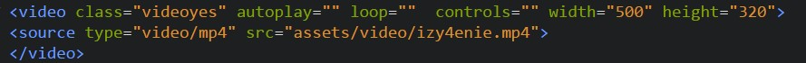

Он позволяет встроить медиаплеер для воспроизведения видео.
Например, вы можете загрузить свое видео на AWS S3 и использовать тег «video», чтобы вставить его на свой веб-сайт.
Использование YouTube для этого может показаться непрофессиональным.
Код: 